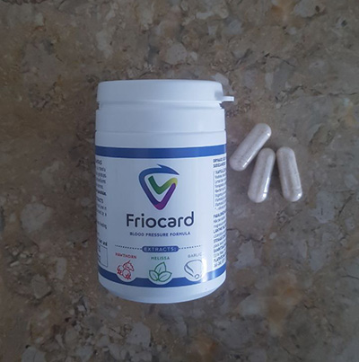
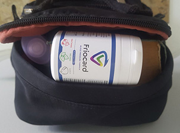

Hipertensiunea ucide nu doar pe dvs.!
Într-un oraș european, s-a întâmplat un incident teribil, un bărbat a lovit 4 persoane până la moarte. La fel, 2 femei cu 3 copii au fost spitalizate într-o stare medie și gravă. Motivul coliziunii necontrolate asupra pietonilor este pierderea cunoștinței în timpul conducerii vehiculului.
Șoferul a fost absolut sobru, nu a luat substanțe narcotice, dar a avut probleme de sănătate aparent minore, la care nu le-a acordat multă atenție. Hipertensiunea l-a ucis încet și l-a luat pe neaşteptate. El a rămas în viață, dar patru oameni au murit imediat. Cum se va dezvolta soarta oamenilor care se află în spital este încă necunoscut.

O astfel de poveste înfiorătoare se poate întâmpla cu oricine! Aproximativ 90% din populația țărilor europene peste 40 de ani suferă de hipertensiune arterială. Statisticile au fost publicate de o Agenție privată de Cercetare situată în Italia. Nu daţi vina de cefalee pe oboselă, este real să preveniţi hipertensiunea! Profilaxia la timp cu utilizarea unui remediu natural unic vă va salva nu numai viața voastră, ci va păstra și sănătatea celor din jur.
Hipertensiunea arterială a cauzat pierderea conștiinței la volan
Cu anii nimic nu a prevestit necazul, mulți se plimbau pe piața principală a orașului. Acolo se poate ajunge în orice mod, inclusiv cu mașina personală. Adam Burat, în vârstă de 51 de ani, trecea prin piața principală în fiecare zi, când mergea la muncă.
Dimineața, bărbatul s-a trezit cu o durere de cap în ceafă, din obișnuință, a băut cafea fierbinte revigorantă și s-a pornit să-şi facă treburile. Când a ajuns în piață, a simțit o durere de cap severă, o senzație neplăcută de stoarcere și o maree de sânge. Capul semăna cu un cazan în care fierbe puternic prânzul. Simțea că brațele și picioarele nu îl mă mai ascultau. De fapt, membrele superioare și inferioare erau amorțite. Atunci Adam Burat a avut un accident vascular cerebral chiar la volan!
După un accident vascular cerebral, mâinile se aflau pe volan într-o stare relaxată, picioarele s-au înmuiat. Este bine că nu a apăsat pedala de gaz, altfel consecințele ar fi fost mult mai grave ...
În cercul următor, șoferul fără conștiință a lovit încă 5 persoane. După aceea, mașina s-a izbit într-un stâlp. La locul accidentului au venit un număr mare de ambulanțe și polițiști. Oamenii în jur plângeau și țipau, unii doar au încremenit de groază. - o zi sângeroasă în istoria omenirii.
Consecințele ireversibile ale unui accident din cauza hipertensiunii arteriale
Opiniile altora s-au împărțit. Unii sunt convinși că este nedrept să dai vina pe șofer. Alții cred altfel și spun că Adam ar trebui să acorde o atenție la starea sa de sănătate și bunăstare, şi să nu conducă vehiculul cu un atac de durere de cap. Cine are dreptate? Este imposibil a da un răspuns clar, dar mii de oameni sunt responsabili de accidente rutiere în fiecare zi din cauza sănătății precare. Nimeni nu este ferit de dezvoltarea dezastruoasă a evenimentelor de pe drum. În plus, din cauza problemelor cardiace la șoferi, pot suferi pietoni nevinovați!
Care este concluzia? Nu se poate ignora cele mai mici schimbări de sănătate, nu conduceți maşina în nici un caz, având probleme de sănătate. Odată cu apropierea vârstei de 40 de ani, este necesar ca fiecare să urmeze un curs preventiv de hipertensiune, în special persoanele care sunt expuse riscului. Printre ei:
- iubitorii de mâncăruri sărate, prăjite și grase;
- persoanele tinere, care sunt expuse în mod constant la factori de stres;
- femei și bărbați cu tulburări ale sistemului endocrin (glanda pituitară, glanda tiroidă, glandele suprarenale);
- cei care nu pot face față obiceiurilor proaste, fumează adesea și consumă alcool.
Imediat după accident, șoferul a fost internat în spital, în aceeași seară și-a recăpătat cunoștința, a doua zi dimineață a aflat detaliile din trecut. Un fior a străbătut corpul, lacrimile se rostogoleau din ochi, limba nu-l asculta. Bărbatul nu a putut spune nici un cuvânt. Nu plângea de faptul că se temea de decizia instanței și de viitorul său.
După accident vascular cerebral, Adam urma să fie reabilitat și să aibă grijă de sănătate. Poliția a spus că, cel mai probabil, va reuși să evite pedeapsa gravă. Adam nu a fost mulțumit de asta, nu a vrut să trăiască, să privească în ochii rudelor victimelor și să poarte o sarcină atât de grea.
Aveţi grijă, hipertensiunea!
Această poveste reală trebuie să rezoneze la milioane de oameni, pentru ca să nu se mai întâmple așa ceva. Specialiștii în hipertensiune arterială din diferite țări europene au efectuat un consiliu, unde au discutat metode eficiente de prevenire a hipertensiunii arteriale și a accidentelor vasculare cerebrale.
Comentariile sale au fost date de specialistul principal Mirel Aurescu.
- Mirel Aurescu, vă rugăm să spuneţi, cum se poate recunoaşte hipertensiunea?
- Trebuie să fiţi atent la sănătatea sa. Vă recomandăm insistent să acordați atenție următoarelor afecțiuni:
- dureri de cap și amețeli frecvente;
- umflături;
- atacuri de sufocare;
- dispnee;
- greață;
- tulburări de vedere.
- Acestea sunt semne de hipertensiune?
- Da, desigur. Accident vascular cerebral - etapa următoare, dacă ignorați bolile descrise. De asemenea, printre complicații se evidenţiază următoarele:
- Ateroscleroza. Se întâmplă în momentul în care în sânge se observă un nivel ridicat de lipoproteine cu densitate mică și foarte mică (colesterol), formarea plăci ateromatoase pe pereții vaselor de sânge.
- Patologie cardiacă. Hipertensiunea contribuie la creșterea riscului de infarct miocardic, deoarece este un factor de risc pentru ateroscleroză și, de asemenea, contribuie la îngustarea arterelor coronare care alimentează mușchiului cardiac cu sânge.
- Tulburări ale sistemului nervos central. Acestea includ afecțiuni cum ar fi accident vascular cerebral, tulburări cronice ale circulației cerebrale și altele.
- Insuficiență renală. Hipertensiunea perturbă circulația normală a sângelui în organe.
- Probleme de vedere. Există o încălcare a circulației sângelui în retina ochiului, precum și în nervul optic (primește, de asemenea, nutrienţi de la arteriole foarte mici).
- Diabet zaharat. Tensiunea crescută este un factor de risc pentru multe complicații ale diabetului zaharat, cum ar fi piciorul diabetic, retinopatia (patologia retinei) etc.
- Preeclampsie. O stare, caracteristică femeilor însărcinate cu fenomene de gestoză (toxicoză).
- Sindromul metabolic. Acesta este un grup de afecțiuni legate de obezitate, creșterea tensiunii arteriale, nivelurile de zahăr din sânge, riscul de infarct miocardic și accident vascular cerebral.
- Disfuncție erectilă. La hipertensiune arterială, problemele cu potență sunt inevitabile. Viața sexuală devine mai puțin vie din cauza simptomelor neplăcute și a afectării circulației sângelui în regiunea pelviană.
Insidiositatea hipertensiunii constă în faptul că este adesea asimptomatică. Chiar și la numere mari de tensiune arterială, bunăstarea poate rămâne bună. Cu toate acestea, bunăstarea la tensiune arterială ridicată nu protejează persoana de complicații formidabile.
De a preveni ireversibilul este real!
Experții sunt siguri că toți bărbații și femeile peste 40 de ani trebuie să treacă un curs preventiv de hipertensiune arterială pentru a-și menține sănătatea proprie și străină. Acest program include următoarele: luarea unui remediu natural , corectarea și îmbunătățirea stilului de viață.
Să ne concentrăm mai atent asupra produsului împotriva hipertensiunii . Se bazează numai pe ingrediente naturale și anume: crataegus monogyna, melissa officinalis, extract uscat de allium sativum, vitaminele B6 și D3.
previne hipertensiunea datorită proprietăților de normalizare a multor procese interne. Să aruncăm o privire mai atentă asupra modului în care funcționează fiecare component natural:
- Сrataegus monogyna - flavonoidele conținute în păducel, reduce rezistența la fluxul sanguin, care, la rândul său, reduce tensiunea arterială, normalizează activitatea sistemului cardiovascular, nervos - inhibă iritabilitatea și agresiunea. Acizii ursolici și oleici măresc circulația sângelui în vasele inimii și creierului, scad tensiunea arterială.
- Melissa officinalis - reduce tensiunea arterială, are un efect antiaritmic, încetinește respirația, reduce ritmul cardiac, crește diureza. Are proprietăți astringente hipoglicemice.
- Extract uscat de Allium sativum - ajută la scăderea tensiunii arteriale la hipertensiune arterială. Previne agregarea trombocitelor și are, de asemenea, un efect antitrombotic. Îmbunătățește starea vaselor de sânge, protejează deteriorarea țesutului nervos în ischemie.
Specialiștii în hipertensiune nu văd nicio alternativă pentru , nici o companie farmaceutică nu a prezentat până acum un astfel remediu natural împotriva hipertensiunii arteriale. În vânzare există numai analogi cu compoziție chimică și un număr mare de efecte secundare.
Profesioniștii din domeniul sănătății recomandă cu tărie să aveţi grijă de sănătatea sa de la o vârstă fragedă, să urmăriţi un stil de viață sănătos și să uitaţi de obiceiurile proaste. Dacă toți oamenii ar asculta recomandările lor, ar exista mai puține accidente din cauza unei deteriorări bruşte a bunăstării, ar exista statistici diferite asupra accidentelor vasculare cerebrale.
Acum, un remediu natural de hipertensiune arterială este disponibil pentru toată lumea. Producătorul a lansat o promoţie, vândând produsul cu o reducere de 50%. Puteți cumpăra produsul natural de hipertensiune arterială numai pe site-ul oficial. Trimiterea mărfurilor se efectuează în termen de 24 de ore, cumpărătorul plăteşte la primire. Achiziționarea falsurilor este exclusă! Acestea sunt cele mai avantajoase condiții de cumpărare , dar cantitatea de mărfuri este limitată.
ATENŢIE! Acum pentru acţionează PROMOŢIA - reducere 50%. În aşa fel distribuitorul dă posibilitatea de a utiliza instrumentul la cât mai mulți oameni posibil. Pentru a obține produsul la un cost redus, trebuie până la (inclusiv) să completaţi formularul de comandă de pe site-ul oficial - farmaciile au refuzat să-l pună în aplicare din cauza costului scăzut. Feriți-vă de falsuri - original poate fi achiziționat numai pe site-ul oficial.
Ina Clipea
Îmi imaginez starea acestui bărbat, o situație foarte teribilă. Și-a pierdut controlul, nu e vina lui pentru ce s-a întâmplat... Cu toate acestea, pe de altă parte, dacă nu vă simțiți bine, trebuie să rămâneți acasă și să luați o vacanță. Viața nu poate fi întoarsă, oameni buni, aveți grijă de sănătatea voastră!!
Margareta-90
Nu sunt surprinsă de statistici, am crezut că fiecare persoană de vârstă matură suferă de hipertensiune arterială. Gândiţi-vă, pentru că aproape în fiecare casă este un tonometru... Voi comanda 3 pachete, pentru sine și soțul meu.
Mercica
Am comandat deja câteva pachete de . Ştiu ce este hipertensiunea nu pe auzite. Cât de mult m-am săturat de dureri de cap și de tensiunea din partea occipitală, nu vă puteți imagina... Sper foarte mult că acest instrument funcționează!
Ion Onescu
Soția mea a început deja să accepte acest remediu și spune că se simte mult mai bine! Atunci.. într-adevăr funcționează. Încă vom mai comanda, astăzi, de asemenea, am vrut să iau un curs preventiv!
Constantin Maniu
Bunica mea este hipertensivă, nu mă surprinde că s-a întâmplat o astfel de poveste teribilă pe drum și omul a leșinat. Nu glumiți cu această boală. Nu e la fel de inofensivă cum credeţi.…
Aurel U.
Am făcut o comandă, au trimis pachetul în dimineața următoare, aștept.
Maria
Femei și bărbați, cine altcineva a încercat ?? Ce spuneţi?
Răspuns pentru Maria de la Ofelia:
Am început să iau câteva săptămâni în urmă, pot spune că nu am avut schimbări majore de tensiune de atunci.
Răspuns pentru Maria de la Fabiana:
Soțul meu a trecut cursul , durerea de cap a încetat să-l deranjeze, a încetat să-și piardă cunoștința.
Mihai Petru
Mă întreb, de ce acest produs nu este în farmacie? Dacă este ceva bun, devine inaccesibil pentru oameni... Sunt indignat!
Catarina
Îmi pare rău pentru acest om și împărtășesc sentimentele şi experiențele sale. În locul lui, nici eu nu aș vrea să trăiesc cu o povară atât de grea pe suflet. Sper cu adevărat că acest lucru nu se va întâmpla cu nimeni altcineva.
Raluca O.
Soțul meu a murit de accident vascular cerebral. Nici măcar nu știa că suferă de hipertensiune arterială. Într-o zi a avut un accident vascular cerebral, a lovit capul pe bordură cu partea temporală, după care a căzut în comă. Iubitul meu n-a mai fost salvat. După autopsie, s-a dovedit că suferea de hipertensiune arterială... Se plângea de o stare proastă de sănătate, iar eu îi recomandam să muncească mai puțin. În moartea lui, e și vina mea că nu l-am făcut să meargă la un specialist.
Elena 31
Voi comanda pentru rudele mele, în familia mea sunt mulţi oameni în vârstă și unii conduc maşina.
Eugen Preda
Mă bucur că acum am prins cu ochii acest articol. Joia trecută am fost diagnosticat cu hipertensiune arterială și mi-au recomandat să iau în mod constant mai multe fonduri, din păcate, au o compoziție teribilă. Voi comanda mai bine !
Dumitru Roşu
Nu aș vrea să fiu în locul lui Adam, este o mare durere pentru întreaga familie și pentru rudele victimelor ...
Ana Movilă
Acum trei ani, soțul meu și-a pierdut cunoștința la volan, s-a întâmplat totul nu departe de casa noastră. A lovit gardul vecinului. Toţi au rămas în viață, dar a rămas invalid. Voi trece cu siguranță cursul preventiv!
Radu Pelin
În opinia mea, mulți suferă de hipertensiune arterială deoarece fumează și adesea consumă alcool. De ce otrăva este disponibilă pentru oameni, iar remedii naturale nu?
Cristina Vioara
Aş dori să mă întorc în tinerețe și să conduc un stil de viață mai sănătos, astăzi hipertensiunea mă limitează în multe lucruri. Sper că mă va ajuta!
Nicolae Babeș
O situație teribilă, s-a întâmplat în câteva minute. Am privit la site-ul, prețul pentru este pur și simplu amuzant, voi comanda în timp ce produsul mai sunt în stoc.
Arseniu Boca
Am trecut deja cursul și văd o îmbunătățire notabilă. E o plăcere! Recomand cu îndrăzneală tuturor celor care doresc să prevină și să reducă simptomele hipertensiunii arteriale.